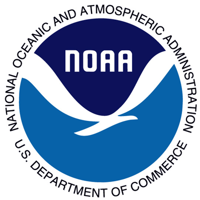

Skills
- GIS Software/Web: ArcGIS Pro, ArcGIS 9.3-10.7, ArcGIS Online, QGIS, Leaflet, PostGIS, GeoDa, Mapbox
- Programming: Python, JavaScript (Beginner, focus on Leaflet and D3), SQL (Beginner), HTML/CSS
- Remote Sensing Software: IDRISI Selva, ERDAS IMAGINE, PCI Geomatica, SOCET SET (Beginner)
- Basic knowledge of Spanish
Professional Experience
Cartographer (July 2015 - Present)
Library of Congress, Geography and Map Division
Washington, D.C.
- Created high quality maps and conducted geospatial research for congressional staff
- Spearheaded use of Esri "Story Maps" at the Library through technical teaching
- Managed GIS databases to improve data accuracy and efficient data-sharing practices across Capitol Hill
Research Assistant (Sept. 2013 - July 2015)
Clark University
Worcester, Massachusetts
- Contributed mapping and GIS research assistance to Shannon Community Safety Initiative
- Applied spatial statistics to analyze crime patterns in Worcester, supporting anti-gang research
- Conducted academic literature reviews on social network analysis, youth gang dynamics, and trauma-informed youth intervention programs
Summer of Maps Fellow (May 2014 - August 2014)
Azavea
Philadelphia, Pennsylvania
- Managed spatial analysis projects for two non-profit organizations
- Performed a suitability analysis to identify schoolyards and play spaces in Philadelphia that would be prime candidates for architectural design grants
- Mapped crime risk in New Haven, Connecticut using risk terrain modeling software
- Analyzed population trends among foreign-born communities in Connecticut
Zoning Data Coordinator (Feb. 2012 - July 2013)
District of Columbia Office of Zoning
Washington, D.C.
- Managed and updated the DC Zoning Map web application through ArcGIS and server management
- Logged zoning case data into the Interactive Zoning Information System and ensured data links with the Zoning Map
- Published the Summary Zoning Map quarterly
- Updated Office of Zoning webpages using HTML in Adobe Dreamweaver
 GIS Analyst (July 2010 – Feb. 2012)
GIS Analyst (July 2010 – Feb. 2012)
PFC Energy (acquired by IHS), Downstream and Petrochemicals Group
Washington, D.C.
- Provided mapping, research, and logistical support to complete consulting projects
- Completed maps for regular publications profiling major energy companies and global energy scenarios
- Managed geographic data for PFC Energy’s Downstream and Petrochemicals Group
- Tracked global economic and infrastructural developments in midstream logistics operations, including pipelines, terminals, and maritime shipping
- Coordinated with analysts to standardize symbology and formatting for maps published to company’s new website
GIS Intern (Jan. 2010 - April 2010)
Library of Congress, Geography and Map Division
Washington, D.C.
- Created maps relating to current legislative issues
- Conducted research on GIS needs and applications for current legislation
GIS Intern (Summer 2008, Summer 2009, Winter 2009)
U.S. Census Bureau, Geography Division
Suitland, Maryland
- Created a geodatabase to organize imagery, resulting in more efficient access to imagery and metadata for the division
- Organized GPS data for use in testing satellite imagery for spatial accuracy
- Authored bibliography on address range systems and address canvassing in GIS to be used to educate new employees
- Advised edits for the TIGER database
- Installed program updates for coworkers
GIS Intern (Summer 2004)
National Oceanic and Atmospheric Administration, National Geodetic Survey
Silver Spring, Maryland
- Edited vectorized images of shorelines
- Compiled shoreline data using SOCET SET
- Researched and prescribed changes to the National Geodetic Survey's web pages
Major Coursework and Presentations
- GW Data Analytics Bootcamp, Final Project: DC Crime Data Dashboard, co-authored with Jimmy White, Reena Desai, and Mario Cosby, 2019
- Created web application for studying crime patterns in Washington, D.C. across space and time using SQL, JavaScript, and Python
- GW Data Analytics Bootcamp, First Project: How to Be a Russian Troll, co-authored with Sarah Fawson, Eugene Mason, and Youseff El-Mikawi, 2019
- Analyzed sentiment of 2016 presidential election-related Russian troll-farm tweets using VADER Python library
- Association of American Geographers Annual Meeting, Paper Presentation: Racial and Socioeconomic Equity in Urban Park Access: A Geostatistical Analysis of Philadelphia, 2015
- Clark University Graduate Multidisciplinary Conference, Oral Presentation: Racial and Socioeconomic Equity in Urban Park Access: A Geostatistical Analysis of Philadelphia, 2015
- Clark University, M.S. in Geographic Information Science for Development and Environment, Final Internship Paper: Geospatial Research Supporting Non-Profit Organizations: Internship with the Azavea 2014 Summer of Maps Fellowship, 2015
- University of Mary Washington, Geographic Information Science Certificate, Capstone Project: Natural Hazard Risk in Haiti, 2010
- Association of American Geographers Annual Meeting, Illustrated Paper Presentation: The Geography of Water Pollution in the Salton Sea, 2010